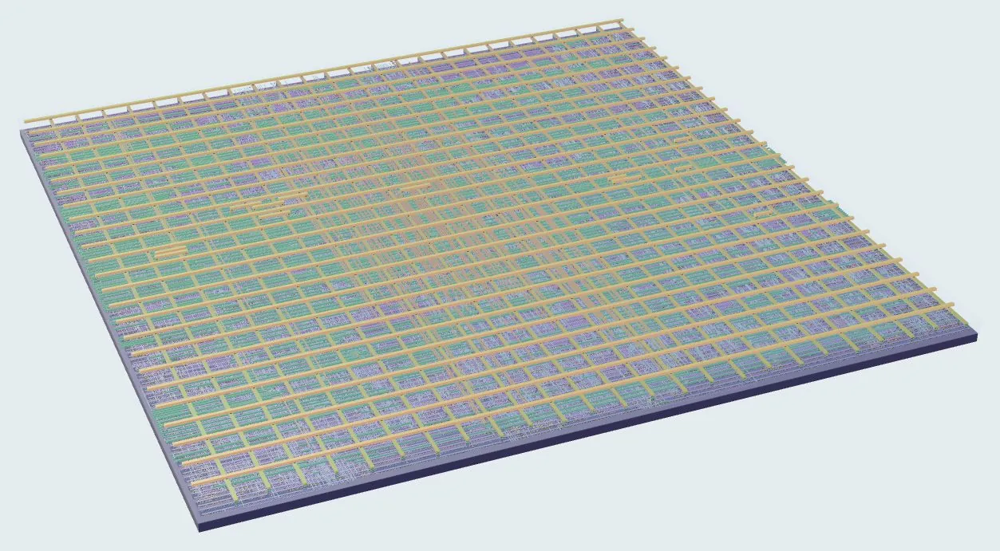
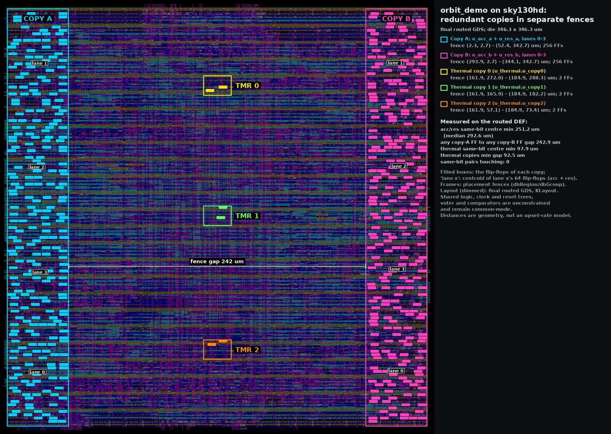
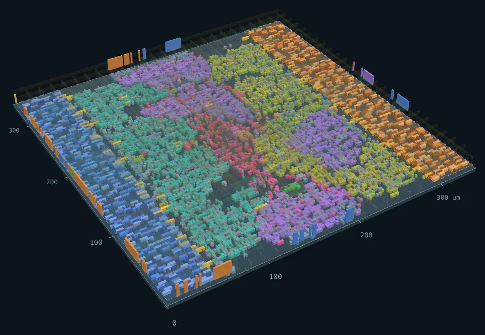
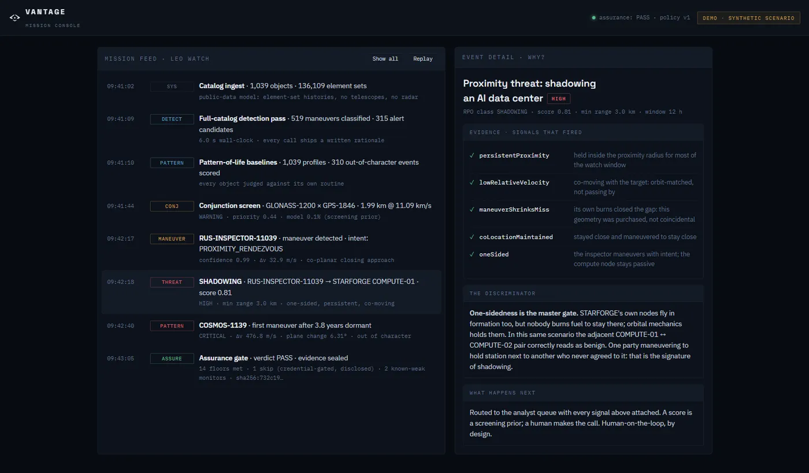
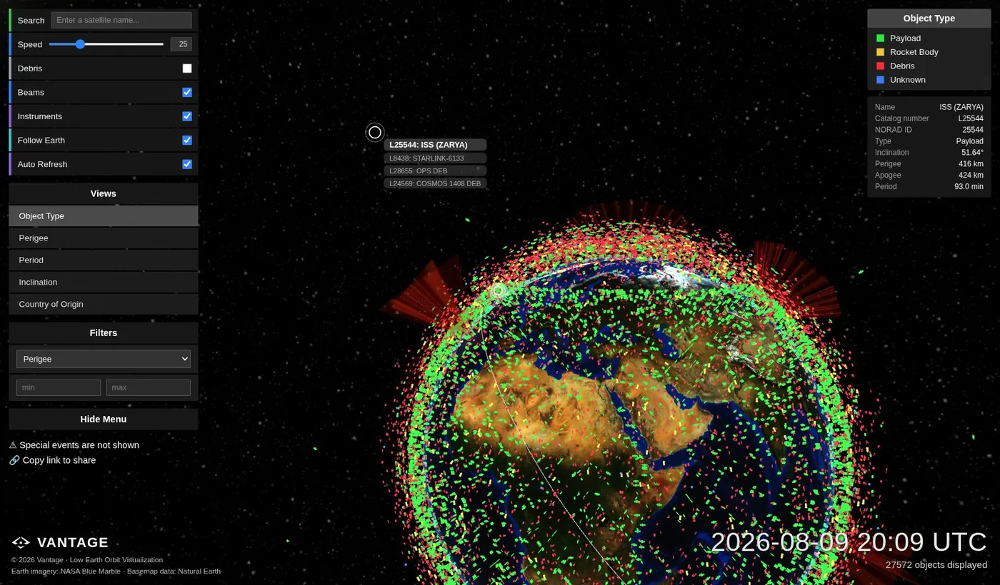
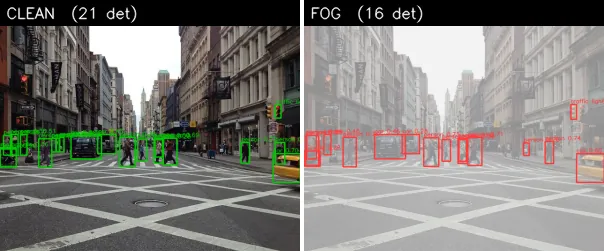
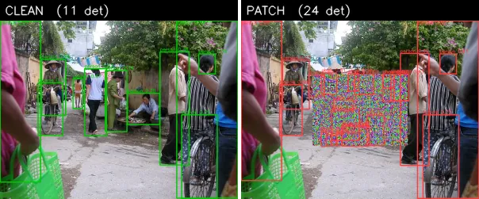
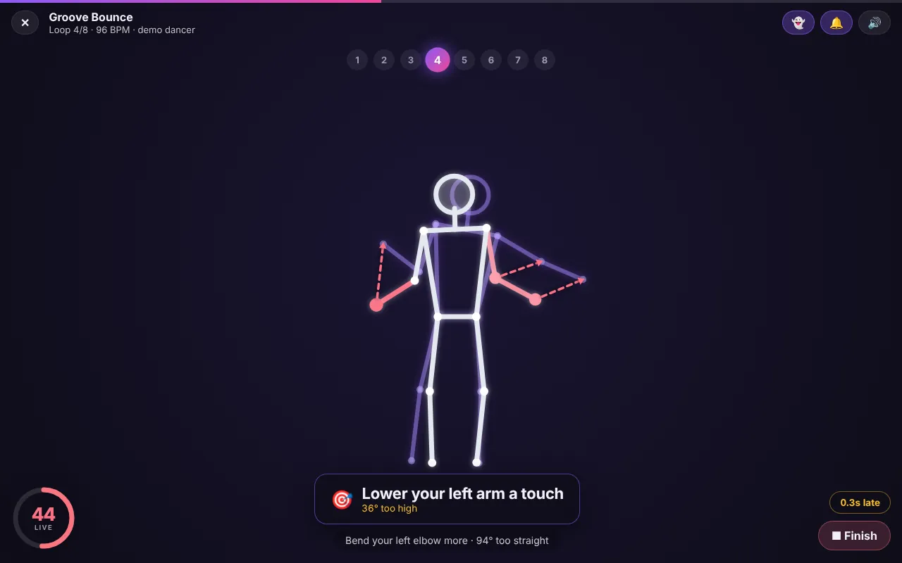
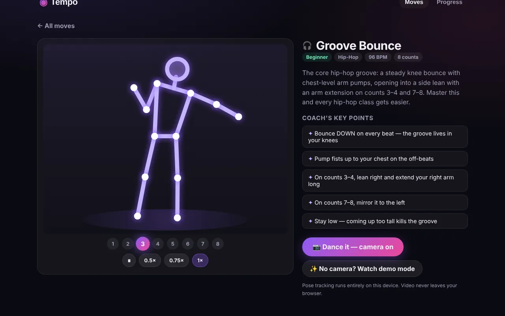

Vanderbilt, Class of 2030 · Portfolio, October 2026
Vittesh Maganti
I'm a first-year at Vanderbilt. I build computer vision and AI tools. Right now I'm working on ORBIT-AI, a design for a small AI chip for satellites that catches its own bit flips. So far it exists as a checked layout and in simulation, not as silicon.
This page covers what I've built, what was hard about it, and what I took away. Most of the code in my 2026 projects was written by AI coding agents (Claude Code) working from my specs and decisions. I say so on each project, and I name the teammates who built parts of them.
NowPutting together a design-review package for ORBIT-AI (layout, schematics, verification logs and known gaps) so another chip designer can review it.

ORBIT-AI demonstrator, rendered from its routed layout. 346 × 346 µm on the SkyWater 130 nm open process.
Index
Biggest first. Each one opens into its own sheet below.
HardwareSep 2026 – nowLead, built with AI coding agents
ORBIT-AI
Radiation in orbit flips bits in a chip's memory, and a satellite can't be sent back for repairs. ORBIT-AI is a small AI accelerator that keeps its results twice in physically separate places, compares them every clock, and refuses to release an answer when they disagree. Working with AI coding agents, I took it from a concept brief to a routed layout that passes design-rule and layout-versus-schematic checks in the open-source flow.
Die
346 × 346 µmSkyWater sky130, open PDK
Compute
1.1 GOPSINT8, 4 lanes at 139 MHz (calculated)
Bit flips injected
936 / 936simulated on the routed netlist: 702 stopped, 234 repaired, 0 wrong outputs
Copy spacing
≥ 251 µmwas 2.76 µm before separation (layout geometry)
Layout checks
0 DRCKLayout; LVS match, antenna clean

The routed layout after separation. Copy A (left) and copy B (right) sit in placement fences 242 µm apart; the three thermal-controller copies run down the middle.

The same layout in the 3D die explorer, cells colored by the part they belong to.
What I built
Starting from the concept brief's spec, a four-lane INT8 multiply-accumulate engine. Every accumulator and result register is duplicated and compared each clock; on a mismatch the chip stops instead of sending out a wrong answer. The thermal controller (illustrative thresholds: throttle at 80 °C, stop at 95 °C) is kept in three copies with a majority vote that rewrites a flipped copy on the next clock.
A run of the design through the full open-source chip flow: Verilog, Yosys synthesis, OpenROAD place and route, and KLayout design-rule and layout-versus-schematic checks.
The physical separation. In the first layout, 13 of the 262 redundant pairs sat in touching cells, as close as 2.76 µm, so one particle strike could flip both copies and the comparison would miss it. I asked for the copies to be separated; they now sit in fences on opposite edges of the die, and timing was re-closed.
A verification suite: unbounded formal proofs (SymbiYosys), fault injection on the RTL and on the routed gate-level netlist, and mutation testing to check that the tests themselves catch broken designs.
A 3D die explorer generated from the real layout files.
How it was built: Claude Code agents wrote the Verilog, testbenches, flow scripts, reports and 3D viewer, starting from the ORBIT-AI v0.1 concept brief. I set the goal and scope, asked for the redundant copies to be physically separated, asked Claude to use its research to improve the design, which produced a radiation-hardening note and a list of fixes for a second version that hasn't been built yet, and sent the visuals and write-up back when they weren't right.
What was hard
Synthesis tools delete redundancy if you let them. The three thermal copies have identical inputs, so without protection Yosys merges them into one (521 flip-flops drop to 517), and a plain keep attribute doesn't stop it. Each copy is now its own instance with keep_hierarchy, and an audit counts flip-flops per group after every run, with a negative control that proves the audit catches the merge.
Separation costs speed. Each lane's shared multiplier now has to reach two copies on opposite sides of the die, which slowed the clock from 7.0 to 7.2 ns, and routed wiring grew from 160 mm to 244 mm, mostly on the copies' outputs crossing the die to the shared comparators and adders.
Testing the tests. The agents broke the design 40 deliberate ways, and 5 of the broken versions still passed every check (one turned out to behave identically). Most only show up after a flip in an unprotected flip-flop such as the fault latch; they're written up as test gaps.
What I learned
Redundancy can be undone in two places: synthesis can merge the copies, and placement can put them side by side. Both have to be checked after every run.
A clean layout isn't a flight part. Simulation and formal proofs show the protection works as designed; only fabrication and beam testing would show it survives radiation.
Where it stands
It's a design-stage demonstrator: a 346 µm core block with no pad ring or package. It hasn't been fabricated or radiation-tested, timing is closed at one corner only, and sky130 isn't a radiation-characterized process. Some shared parts (clock, reset, each lane's multiplier, the comparators) are still single points of failure, and three flip-flops have no protection at all: in the RTL fault campaign, flips in one of them escaped 200 times out of 200. The full concept is 16 tiles at a calculated 6.55 to 26.2 INT8 TOPS (200 to 800 MHz), on paper only.
Public satellite catalogs tell you where an object is. Vantage tries to tell you what it's doing. It reads public orbit data, flags when a satellite maneuvers or starts shadowing another satellite, and writes out its reasoning so an analyst can check it.
Collision-risk model
16 / 21high-risk ESA conjunctions flagged 2 days ahead on held-out data (precision 0.23); ROC-AUC 0.963, cross-validated 0.956 ± 0.013
Real maneuvers caught
5 / 9documented ISS and Aeolus burns, within ±2 days and in the right direction (0 / 9 before recalibration)
FCC filings re-checked
8 / 8same 5-year-rule pass/fail as NASA's DAS on 8 orbit cases from two public filings (model-to-model, passive decay)

The mission-feed demo on vantage.industries, running a synthetic scenario with made-up satellites. Each alert lists the signals behind it.

The orbit map on vantage.industries. It draws about 27,600 objects generated to match the shape of the public catalog, and its look is modeled on LeoLabs' public visualization.
What I built
The first version of the product in June 2026: live CelesTrak catalog ingest, maneuver detection, and an orbit console.
A collision-risk model built on ESA's public dataset of 162,634 real conjunction messages. Two days before closest approach, it predicts whether a close approach will end up rated high-risk, and its scores are calibrated as probabilities (calibration error 0.005 on held-out data, though that test set had only 21 high-risk events).
A validation harness that replays nine publicly documented ISS and Aeolus maneuvers against the detector.
An FCC orbital-debris exhibit generator, checked against two real public filings.
The first version of vantage.industries (domain, search setup, interactive demo), and the pitch deck, which I rebuilt after a mentor's written feedback and revised again after an in-person review.
How it was built: Claude Code wrote most of the code from my direction; I chose what to build, checked the results and merged the work. My co-founder Nathan Aye reworked the proximity engine, hardened security, ran the synthetic and proximity cross-checks that showed the recalibrated detector needs dense tracking data, built the Command Center and GUARDIAN screens and the ground-coverage feature, and did most of the site's current design.
What was hard
Real maneuvers are tiny. Documented ISS and Aeolus burns are 0.5 to 2.4 m/s. Our detector, tuned on synthetic data with an 8 m/s floor, caught 0 of 9. Dropping the floor to 0.5 m/s caught all 9, but buried them in about 1,700 detections, most of them noise. A detector that first removes atmospheric drag got to 5 of 9 with the right direction.
Physics that looks like intent. The first test of a "campaign watch" prototype, run on our synthetic test catalog, named a piece of debris and a spent rocket body as members of a coordinated campaign. Earth's bulge slowly rotates orbital planes (J2 precession), and the engine read that drift as satellites converging on a target. Chasing it down meant fixing seven false-alarm bugs.
Rare events. Only about 1% of conjunctions are high-risk, and the test set had 21 of them, so precision-recall scores swung a lot between folds. I report cross-validated ranges and calibration, not just one test-set score.
What I learned
A detector that hits 86.6% recall on synthetic data can catch 0 of 9 real maneuvers at the same setting. Real events have to come in early.
Pick thresholds away from the test set. The first collision model chose its alert threshold on the test data; choosing it by cross-validation instead dropped precision from 0.29 to 0.23. The lower number is the honest one.
Where it stands
It has no customers or pilots yet and runs on public data only. Public catalogs carry no covariance, so collision scores are a screening signal, not an operational probability of collision. The response features are simulation only.
A benchmark for detecting deception in video. It takes the DOLOS game-show dataset (1,675 clips of 213 people lying or telling the truth), adds transcripts as a third input alongside audio and video, and tests models on cues drawn from deception psychology.
Published
ACL 2025SICon workshop, Vienna, pp. 50–64
Poster
NeurIPS 2025CogInterp workshop, San Diego
My position
2nd · 1stACL author list · NeurIPS workshop version
What the work does
Adds Whisper transcripts to every clip (10% checked by hand), so models see text as well as audio and faces.
Extracts nine features grounded in deception psychology, such as micro-expressions, response latency and lexical diversity, and uses SHAP to see which cues a model relies on most.
Compares a multimodal model (Meta's ImageBind) against zero-shot GPT-4 and Gemini 1.5 working from the transcript alone.
My part
Co-author on a team mentored through Algoverse AI Research. I'm second author on the ACL Anthology paper and first author on the NeurIPS CogInterp workshop version, which was accepted as a poster.
What makes it hard
There's no single tell. The paper's limitations section says it plainly: cues vary from person to person and across cultures. That's why the benchmark combines text, audio and video and uses SHAP to check which cues a model actually leans on.
TennisVisionAI is the app I'm building to turn video of a player's strokes into coaching cues they can act on. Before it, I built TennVision, a desktop prototype, in May 2025. I captained my high school tennis team.
What I built
TennVision, the prototype: MediaPipe pulls 33 body landmarks per frame, 30-frame windows feed a small Keras CNN that labels a clip's stroke as forehand or backhand, and a Tkinter app plays the video back with a pose overlay and YOLO object boxes. It then asks an LLM for coaching feedback from the measured joint positions and arm angles, falling back to 48 hand-written tips.
A script that gathers forehand and backhand video clips into a labeled training set.
TennisVisionAI, the app I'm finishing now. It's designed around video stroke analysis, performance metrics and one focused coaching cue at a time.
What was hard
Keeping training and inference consistent. Training used x, y and z for all 33 landmarks (99 numbers per frame). The analysis path packed x, y, z and visibility and kept the first 99 numbers, which fixed the shape error but fed the model different features from the ones it learned.
Finding the ball. I had no tennis-ball model, so the prototype leans on a general-purpose YOLO detector instead of one trained for tennis balls.
Object detectors are usually scored on clean images. ODRB, the Object Detection Robustness Benchmark, measures what's left under simulated fog, blur, motion blur, low light, smoke, dust, sensor noise and JPEG artifacts, and under adversarial attacks. It reports how much accuracy survives, with confidence intervals and a worst-case floor, and seals each result file with a SHA-256 digest so edits made after the run can be caught.
YOLOv8n, simulated conditions
61.2%accuracy retained, 95% CI 59–65, 500 COCO images
YOLOv8n, attacks plus conditions
44.5%retained, 95% CI 43–48; 6 white-box attacks plus the 8 conditions
YOLOv8n, PGD-L∞ alone
6%retained
Worst case
5.1%YOLOv8n's floor across the simulated conditions

Same detector, same street. Clean: 21 detections. With simulated fog: 16.

Same detector, a market scene. Clean: 11 detections. With an optimized adversarial patch pasted in: 24, most of them false boxes on the patch itself.
What I built
The scoring I directed Claude Code to build: retained accuracy under each condition, confidence intervals from an image bootstrap and from re-running attacks with different seeds, a worst-case floor, and a pass / conditional / fail verdict against a policy file.
Baseline runs on YOLOv8 nano, small and medium on COCO, and on RarePlanes overhead imagery, all on a CPU.
A synthetic-to-real test: fine-tuning YOLOv8n for 10 epochs on 120 synthetic RarePlanes images raised mAP@0.5 on 80 real satellite tiles from 0.119 to 0.772. Those 80 tiles were also used to pick the checkpoint, so that number is optimistic; on 500 real tiles the model scored 0.539.
How it was built: Claude Code wrote most of the code from my direction. Nathan Aye wrote the PGD attacks and the smoke and dust conditions, and later report signing, calibration scoring and a torchvision adapter.
What was hard
Running on a CPU. White-box attacks need gradients and lots of compute, so the headline benchmark uses the black-box physical profile, and the full attack profile was run only for YOLOv8n.
Licensing. The Ultralytics YOLO package is AGPL, so in the ODRB release it became an opt-in extra and the bundled detectors run through ONNX Runtime instead; Nathan had also added a BSD-licensed torchvision adapter.
Labels can lie. On a six-image set labeled only for clearly visible objects, the smallest model looked best because bigger models found real objects the labels left out. Ranking models moved to the fully labeled COCO validation set.
What I learned
Robust to weather isn't robust to an attacker. YOLOv8n keeps 61% of its accuracy under simulated weather, blur and noise, but 6% under a PGD-L∞ attack.
Motion blur and sensor noise did the most damage of the simulated conditions in every 500-image run: motion blur left 7 to 22% of accuracy, sensor noise 15 to 51%.
Small, reused test sets flatter you. The overhead model scored about 0.77 mAP@0.5 on the 80 real tiles that were also used to pick its checkpoint, and 0.539 on 500 tiles; the first 80 tiles also turned out to be easier.
Bigger YOLOv8 models were both more accurate and more robust: 61%, 66% and 73% retained for nano, small and medium.
Where it stands
The code is private for now and has no outside users yet. Earlier benchmarks such as COCO-C already test detectors on corrupted images. ODRB's angle is reporting simulated physical conditions and adversarial attacks in one retained-accuracy score, with a sealed evidence file for each run.
AppSep 2026Built with AI agents
Tempo
Tempo watches you dance through your camera, compares your pose to a reference move, and tells you what to fix, like "Lower your left arm a touch: 36° too high" or "0.3 s late".
Runs
On-deviceno video leaves the browser
Compares
14 featuresjoint angles, stance and weight shift
Moves
4hip-hop, pop, disco, street

A live correction in demo mode. The red limbs are the ones off the reference pose.

Learning a move count by count before dancing it.
What I built
The product brief I gave Claude Code: camera pose tracking, a reference move, joint-angle and timing comparison, specific corrections instead of "you're doing it wrong", a ghost overlay, a session report, and progress over time. I asked for one dance move to work extremely well rather than lots of shallow features.
The call to ship it as a free website first. It's a static web app you can install on a phone, hosted on GitHub Pages.
Catching the gap between demo and product. The first public link only ran a simulated dancer, so I pushed back that it wasn't coaching me, and I made the repo public so the real camera version could go live.
How it was built: Claude Code wrote all of the code (TypeScript, React, MediaPipe Pose) from my brief in one evening.
What was hard
Timing versus technique. If you're late, every joint looks wrong. Tempo first finds the time shift (up to 0.8 s either way) that best lines your motion up with the choreography, then scores form with that shift removed, so lateness isn't counted twice.
Free hosting. GitHub Pages wouldn't deploy from a private repo on the free plan, so I made the repo public. Then the workflow token couldn't create the site, so Claude pushed the built app to a separate gh-pages branch, which GitHub serves.
Where it stands
Live on GitHub Pages. The four reference moves are hand-written joint-angle keyframes, not recordings of a real instructor, and it hasn't been tested with outside users yet.
An iPhone app in SwiftUI: pick a photo, a Core ML model classifies the waste (for example paper, metal or plastic), and a simple rule turns the label into a recyclability hint.
Feb 2026
Pokestrator · TreeHacks 2026
A self-improving iMessage agent built on Interaction's Poke that spins up sub-agents to build the tools it's missing. Built with Ayman Abdul-Majid in under 36 hours at Stanford.
A planner for my first semester that ranks what to do next across classes, exams, clubs, research and startup work, instead of just sorting by due date. I gave Claude Code a 33-section spec with privacy rules (no getting around Vanderbilt's login, no stored passwords), and it built the app. Because the university systems sit behind single sign-on, schedules come in by paste or calendar feed.
Jun 2026
Truck predictive maintenance
A prototype Claude Code built from my spec: it fits a trend to each sensor on a simulated fleet of FMTV medium tactical trucks, projects when a reading will cross its safe limit, and drafts a parts requisition and repair task before the truck goes down. Claude Code then benchmarked the approach on public failure datasets. On NASA's C-MAPSS jet-engine benchmark, the app's straight-line trend missed remaining life by about 78 cycles (RMSE), while a separate gradient-boosting model cut that to 12.9. A failure classifier on Scania's public Component X truck data scored 0.84 ROC-AUC in 5-fold cross-validation, but 0.73 on the held-out test set, whose failure labels are defined differently.
Research & work
Labs, internships and roles.
Since Aug 2024
MIT CSAIL · Mantis, Prof. Manolis Kellis's group
Mantis maps ideas and documents into a shared semantic space ("cognitive cartography"). I lead a team building internal tools for the lab, including a pipeline that turns the lab's weekly meetings into tasks it can track and assign.
Research intern in perception and recognition. I designed neural networks for recognizing people in digital-forensics images.
2025
Algoverse AI Research
Mentored research program. Our team's paper, DecepBench, was published at the ACL 2025 SICon workshop and accepted as a poster at the NeurIPS 2025 CogInterp workshop.
Sep 2024
City of Milpitas · Public Works intern
Public Works department, starting September 2024.
·
Loopr AI
I worked at Loopr AI, a startup that makes AI visual-inspection software for manufacturers.
Activities
High school
Boys' tennis, Mission San Jose High School
Team captain, then varsity co-captain my senior year. In a spring 2026 match against American High, my co-captain and I beat their top doubles pair 6–2, 6–1 on court 1. UTR 6.0 (April 2025).